Llegada a LAX, recuperar el jet lag. Un día tranquilo: Griffith Observatory con vistas panorámicas a toda la ciudad y el signo de Hollywood, paseo por los barrios de Los Feliz o Silver Lake. Al día siguiente salís temprano por la Pacific Coast Highway.
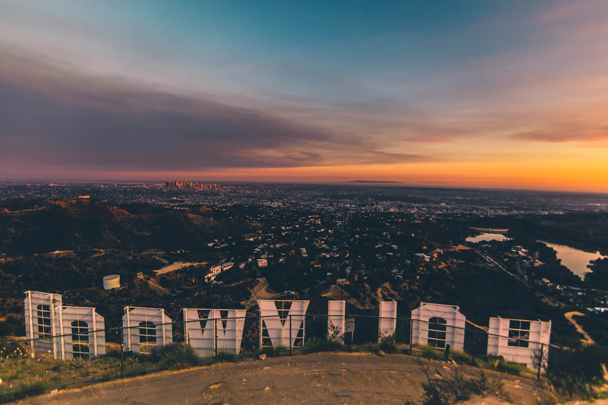
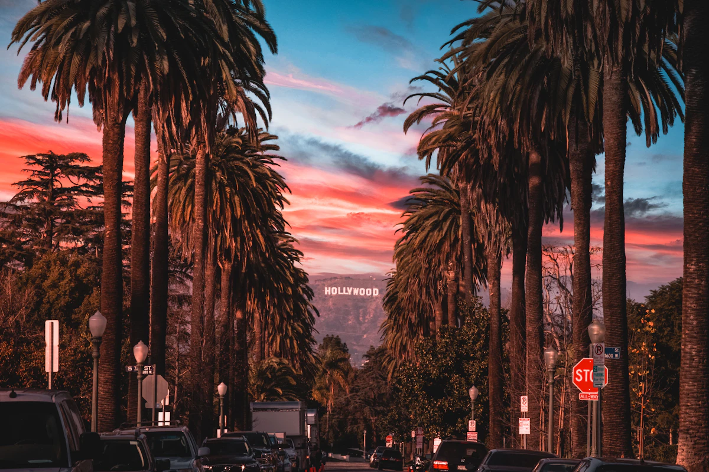
Uno de los drives más espectaculares del mundo: la Ruta 1 pegada a los acantilados del Pacífico. El puente Bixby Creek es la foto icónica. Parás en los miradores, en las playas de arena negra, y llegás a Big Sur al atardecer. Dormís en Big Sur o en el mágico pueblito de Carmel-by-the-Sea.
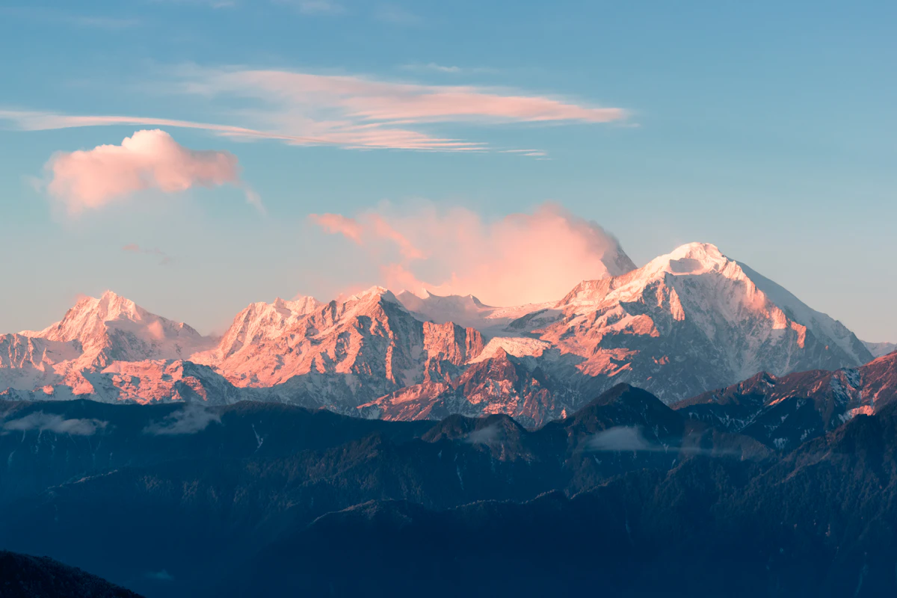
Tu base de operaciones. La ciudad más rica en personalidad de EEUU. Instalate en The Mission, Hayes Valley o Nob Hill y explorá sin cambiar de hotel. Desde acá hacés excursiones de día a Napa, Silicon Valley y la costa.
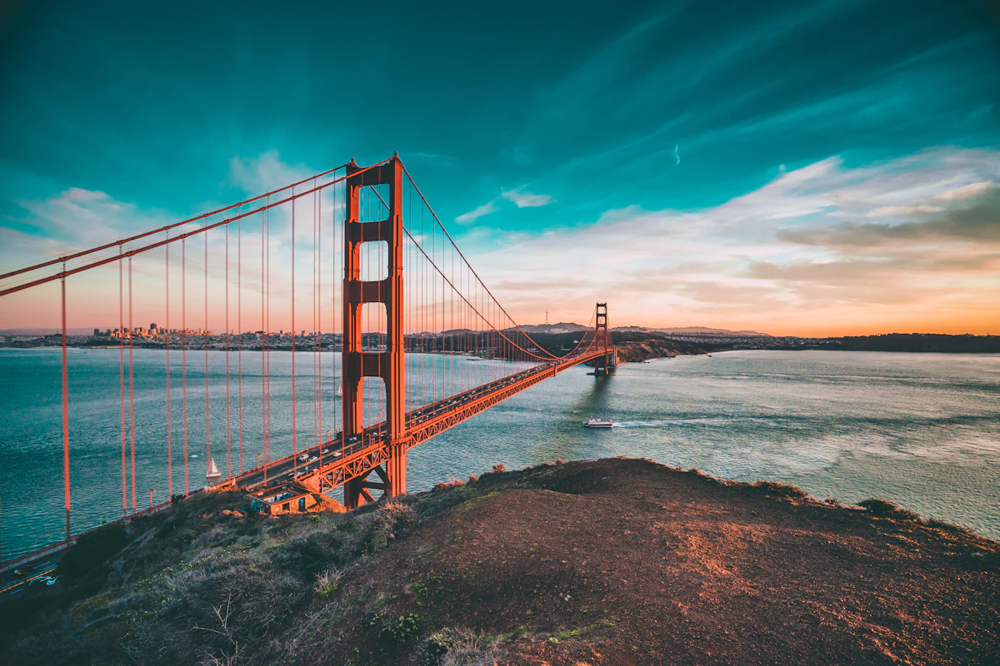
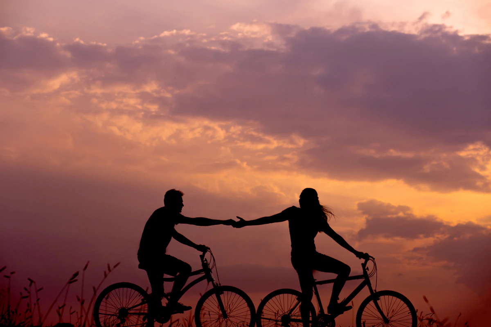
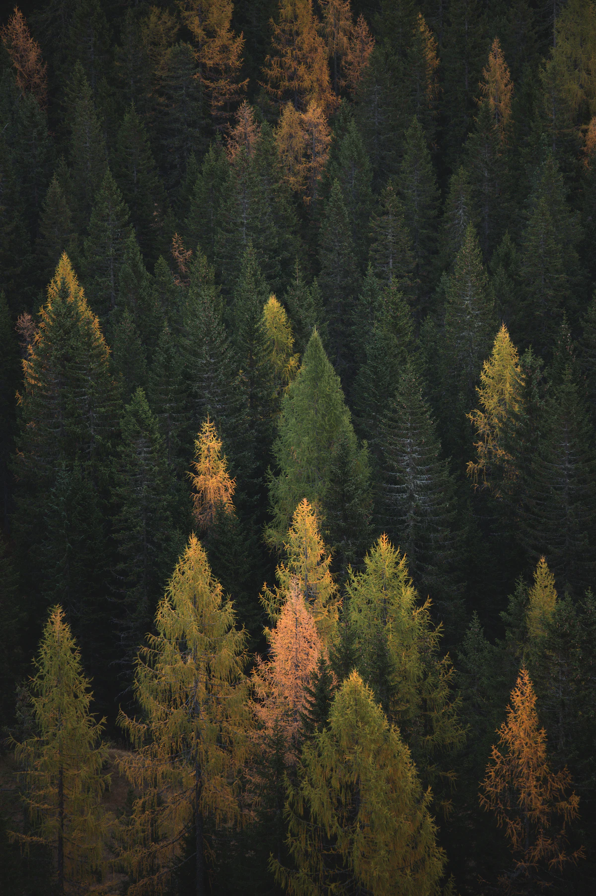
En mayo-junio Yosemite está en su mejor momento: cascadas al máximo por el deshielo, valles verdes, cumbres nevadas. Dos días completos para Tunnel View (la postal clásica), Yosemite Falls y Bridalveil Fall, Mirror Lake con el reflejo del Half Dome, y Glacier Point con vistas de 360°. Reservá el acceso diario online con semanas de anticipación.
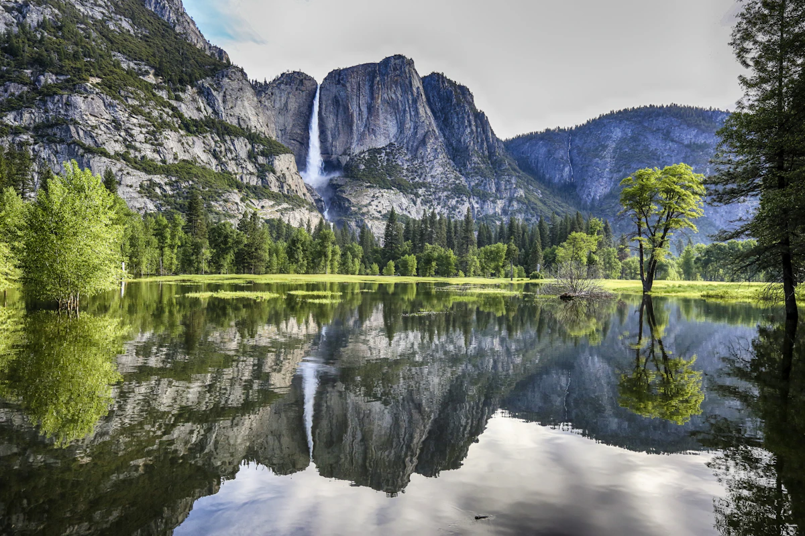
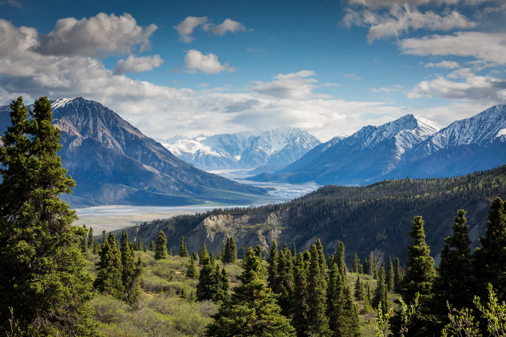
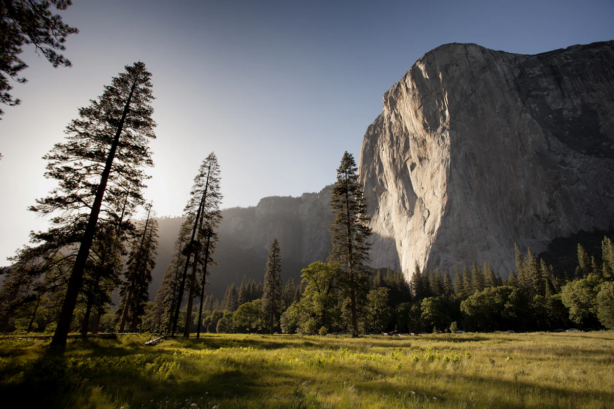
Tu base para los últimos días. El Strip de noche es un espectáculo en sí mismo aunque no juegues. Fremont Street tiene un ambiente más auténtico. El día 13 lo dedicás íntegramente a una excursión al Grand Canyon — salís a las 6 AM, llegás a media mañana con buena luz, y volvés a Las Vegas de noche. El día 15 hacés los 4:30 h a LAX tranquilo, sin apuro.
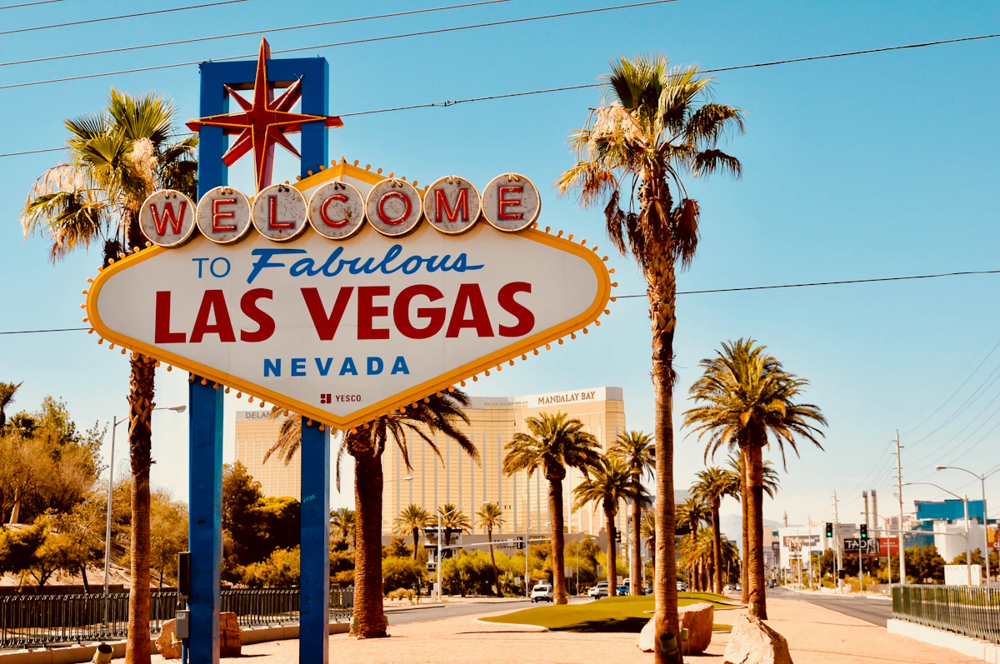
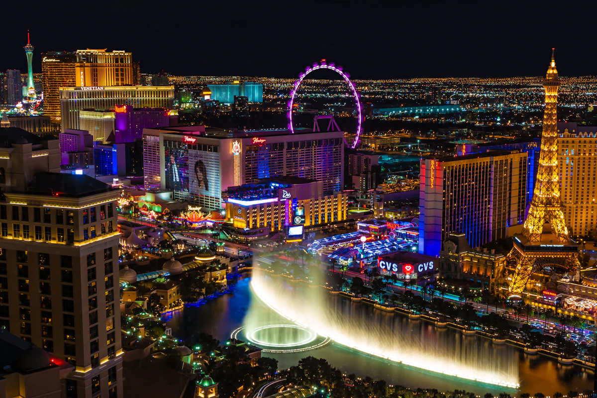
Salís de Las Vegas a las 6 AM y llegás al South Rim a media mañana con la mejor luz del día. Tiempo para el Rim Trail entre miradores, bajar un tramo del Bright Angel Trail, y ver el cañón desde distintos ángulos antes de arrancar la vuelta. Sin la presión del amanecer pero con todo el día para absorber una de las maravillas más grandes del planeta. La entrada está cubierta por el America the Beautiful Pass.
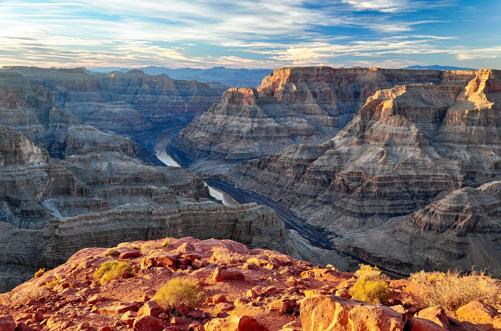
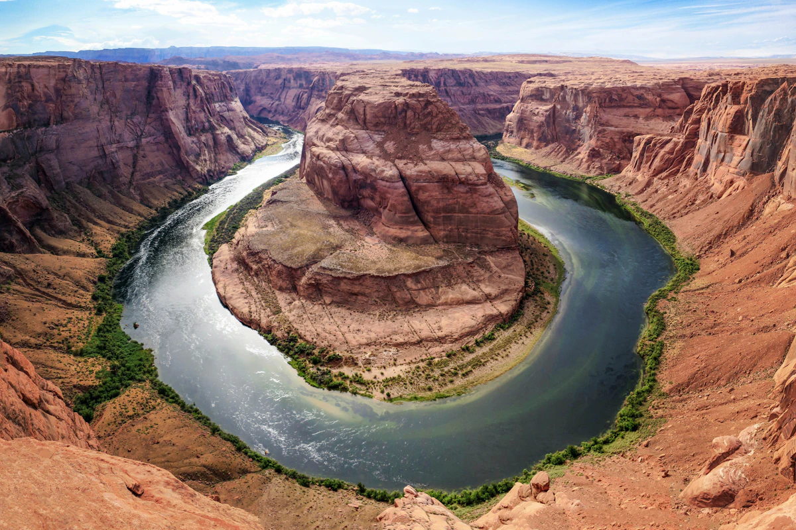
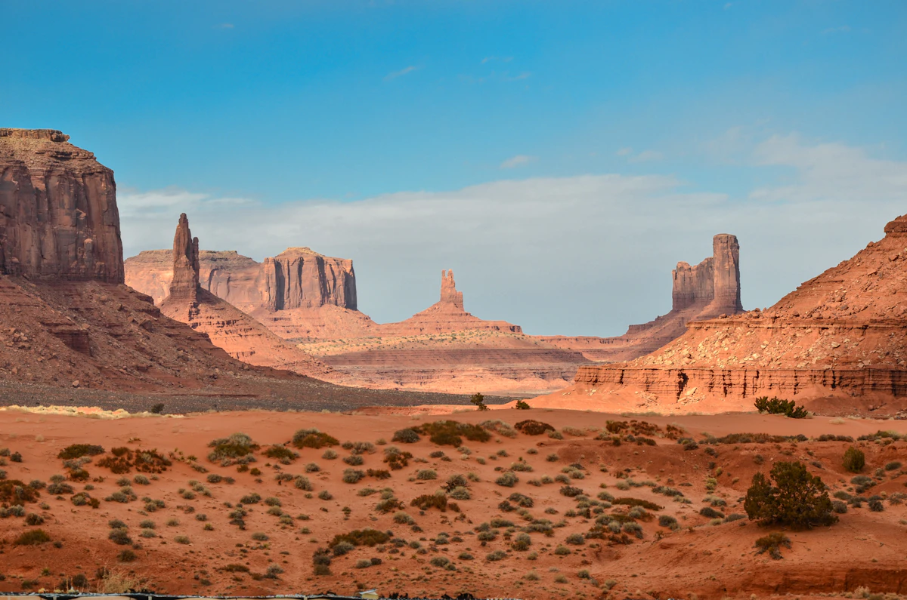